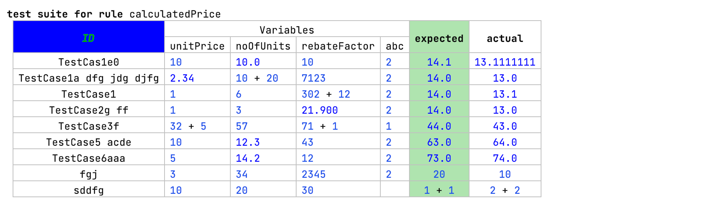

Tables
Language Namespace : de.slisson.mps.tables
As the name already implies, this cell adds support for tables. The table is internally represented with objects of the
interface ITableGrid. The supported contents of the cell are explained in the following sections. The table
doesn't have to be declared in the editor of one single concept: the declaration of vertical or horizontal rows can also
be done in other editors by using the partial table cell.

Supported properties
- header alignment disabled: don't align the headers with the rest of the table
- grid post processor: a function that's invoked after the editor cells of this language were created. It can be used, for example, to set some additional cells, or add some dynamic row or column headers.
- disable left row end cells: there's a special cell to the left of table rows that's used, for example, for inserting new table rows. This flag can disable this cell (default: false).
- disable right row end cells: there's a special cell to the left of table rows that's used, for example, for inserting new table rows. This flag can disable this cell (default: *false).
Cell
A cell is the smallest unit of a table. It contains the content and can contain a column (c<>) or row header (r<>).
The show if property in the inspector can be used to tie the visibility of the cell to a condition.
Horizontal and Vertical
The horizontal%/vertical% cell can be used to display children in the editor. The link declaration must be set.
The row and column headers can also be set. To specify the horizontal/vertical content in a dynamic way, use the cell horizontal/vertical.
They support the same content as the table cell itself.
Query
A table cell query is the easiest way to create a full table.
Supported parameters
- shared variables: variables that can be accessed by the other parameters
- initialize: a function that initialized the shared variables or other code
- column count: the number of columns to display
- row count: the number of rows to display
- cell: a function that creates the cell itself. Cells can be created automatically by providing a node or a string
property. The cell or a list of cells can also be created by creating an instance of one of the
EditorCellclasses. If you want to create a cell dynamically and want to use the normal editors for creating editor, you can invoke the methodeditorContext.createCellwhich takes a node as a parameter and a suitable editor declaration for the provided node. At the end, the type of collection must be specified (vertical list/cells, horizontal list/cells). - substitute node: the concept or a link declaration can be selected for the substitution menu. The function must perform the substitution itself e.g. replacing an old node in the table with the new node.
- can create: a query that specifies if the cell at the column and row index can be created. Alternatively, only a row or column can be allowed to be created.
- column header: a query for creating the column headers
- row header: a query for creating the row headers
Grid query
The grid query is an even lower level form of declaration a table. It works by setting the cells directely in the grid
object of type ITableGrid. There are various set methods that can be used to create the table such as grid.setCell()
or grid.setColumnHeader. To support code completion, the substitution info must be set by calling grid.setSubstituteInfo
for every cell by using its column and row index as a substitute info node as parameters. The substitute info node can
be created manually or by using one of the methods of the substituteInfoFactory method (e.g. forChild() or forEmptyList()).
Header
The header cells can also be created in different ways:
- ": a constant text
- #: a reference to an existing header node
- [: an editor cell
- {: a list of header nodes
- query: this option gives the most flexibility. The headers can be created the same way as in the table cell query.
Patterns
As can be seen in the previous description, there are many ways to create tables. This section shows some common ways to achieve it:
Variant 1: one editor for a table with rows (vertical), columns (horizontal) + query for selecting the nodes for the cells.
table {
vertical c<query{}> {
horizontal r<query{} > {
query {}
}
}
}
The queried node contains a partial table:
partial table {
cell c<> r<>
}
Variant 2: one editor for a table with rows
table {
vertical% r<> c<>
}
The row itself contains a partial table that creates the columns with special cells for the column headers. The first column is created using a table-cell cell, the others using a grid query.
partial table {
cell {name} c<ID> r<>
gridquery {}
}
Variant 3: one editor for a table with column headers
table {
column headers { ... }
cells:
vertical%rows r<> c<>
}
There's a specific concept for rows with the following editor:
partial table {
horizontal r<> {
cell {name}
query {
}
}
}
For the cell there is also an extra node which just holds the content itself:
[> % value % <]
Variant 4: a completely dynamically created table using grid query
table {
gridquery {}
}
Alternatives
For simple instances, you might consider using a MPS collection with a vertical grid layout instead. It has a much better performance
and can be easier to use.